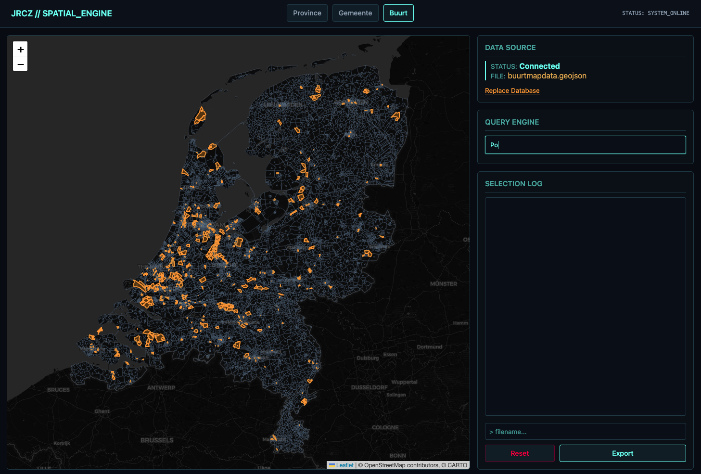
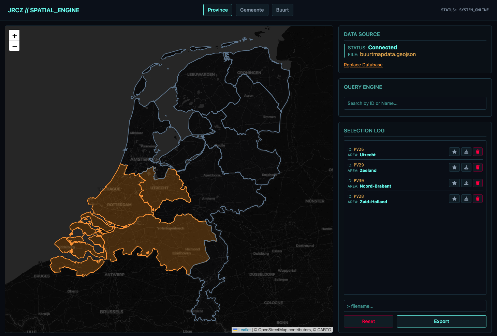
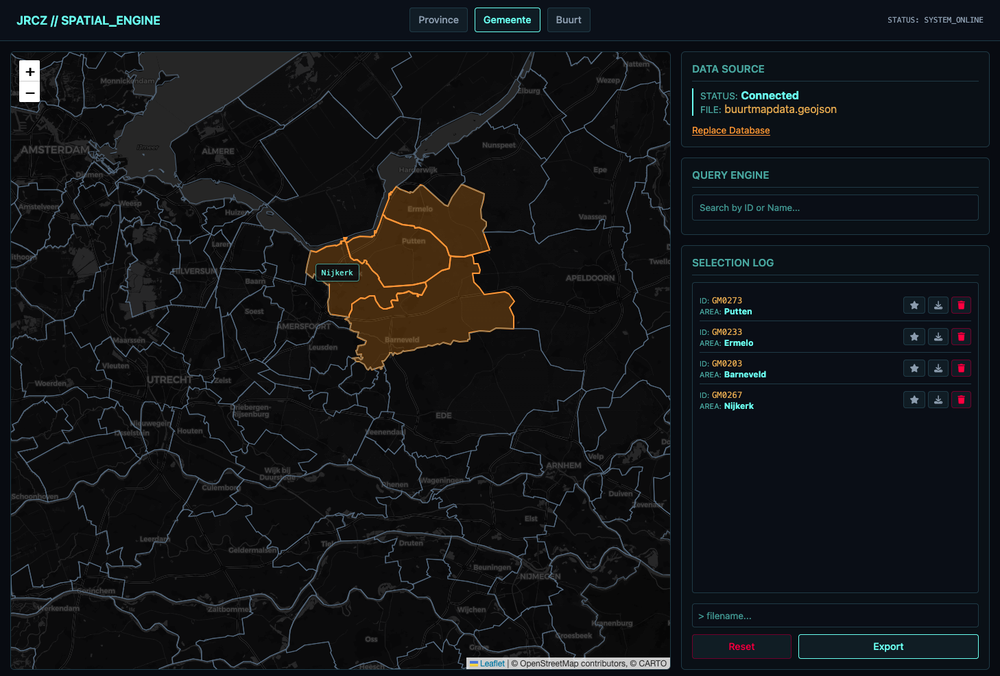

JRCZ Spatial Query Engine
The Problem: The JRCZ data science lab models localized environmental phenomena. To do so effectively, researchers previously had to manually filter through nationwide GeoPackage (GPKG) databases to extract specific political boundaries—a localized process taking hours per request.
The Solution: I engineered an automated data ingestion and retrieval application to replace this manual workflow. This process is now automated with near-instant spatial extraction of complex coordinate arrays into standard GeoJSON structures. The software is currently in active production use.
Technical Specifications
- Robust file ingestion processing to handle nationwide spatial data inputs.
- Implement basic user authentication with password hashing and session security.
- Design a localized data retrieval pipeline of complex polygon data to replace manual hours.
- Algorithmic transformation to parse spatial data from an existing SQLite-based GeoPackage.
- Co-designed data-filtering logic based on common localized phenomena.
- Managed parallel local (SQLite) and main (MySQL) database environments with Laravel tools.
Interface & Spatial Rendering
The map interface was designed to cleanly parse high-density polygon data, breaking down complex nationwide coordinates into an easily readable spread.


